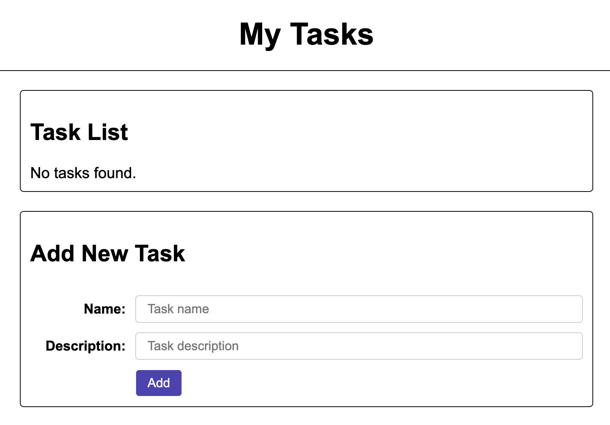
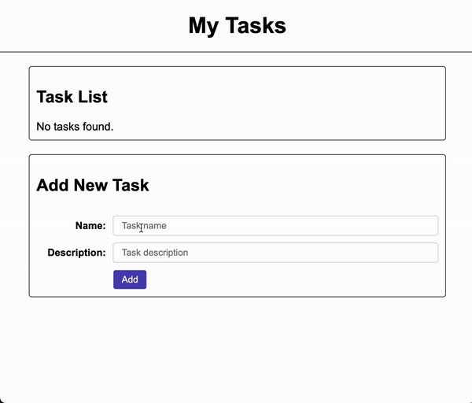

Assignments > Lab 8: Intro to Client-Side Programming with React
Due on Sun, 11/17 @ 11:59PM. 6 Points.
To become familiar with client-side software engineering considerations, we need a concrete example to work with. Given this, we have decided to delve into client-side web programming – mostly because web clients are accessible and ubiquitous (and client-side web programming is a valuable skillset).
Therefore, in this lab, you will learn a bit about HTML, CSS, and JavaScript. Please refer to the web resources below to familiarize yourself with these languages. We will also be doing a very brief “crash course” of these languages during class.
1. Background Readings and Resources
- CSCI 344 HTML Resources
- CSCI 344 CSS Resources
- JavaScript
- Slides: Intro to Client-Side Web Tech
2. Set-up
Note: Lab 6 builds on Lab 5
In order to begin Lab 6, your Lab 5 code needs to be working correctly. If you haven’t yet finished Lab 5, please make it a priority.
After completing Lab 5, you will create a new branch from your existing lab05-your-username branch (from within your class-exercises-fall2024 repository) as follows:
git status # make sure you've committed all of your files
git branch # verify that you're on the lab05-your-username branch
git checkout -b lab06-your-username # should create a new branch based on your lab05 branch
git branch # verify that you're on your new branch
By branching from your lab05-your-username branch, your Lab 5 code will be included in your lab06-your-username branch (so that your client can interact with it). When you’re done, please make the following modifications to your code:
1. Edit server.py
At the top of server.py, add the following import statement:
from fastapi.staticfiles import StaticFiles
Then, at the very bottom of server.py, add this line:
app.mount("/", StaticFiles(directory="ui", html=True), name="ui")
This code allows us to server static files from the ui directory as if they were coming from the root of the website. Verify that you did it correctly by trying to access these static files via FastAPI (note that the Docker container you made in Lab 5 must be running):
If you see a JavaScript file and a CSS file, it worked.
2. Create a new HTML file
Within the ui directory, create a new file called index.html and add the following code to it:
<!DOCTYPE html>
<html lang="en">
<head>
<meta charset="UTF-8">
<meta name="viewport" content="width=device-width, initial-scale=1.0">
<link rel="stylesheet" href="/css/tasks.css">
<script src="/js/main.js" type="text/javascript" defer></script>
<title>Web Client</title>
</head>
<body>
<header>
<h1>My Tasks</h1>
</header>
<main>
<section>
<h2>Task List</h2>
<div class="task-list">
<!-- tasks go here -->
</div>
</section>
<form class="add-task">
<h2>Add New Task</h2>
<label for="name">Name:</label>
<input type="text" placeholder="Task name" id="name">
<label for="description">Description:</label>
<input type="text" placeholder="Task description" id="description">
<button>Add</button>
</form>
</main>
</body>
</html>
3. Add a new stylesheet
Within the ui/css directory, create a new file called tasks.css and add the following code to it:
body {
font-family: Arial, Helvetica, sans-serif;
margin: 0;
}
header {
display: flex;
justify-content: center;
align-items: center;
height: 75px;
border-bottom: solid 1px #000;
margin-bottom: 20px;
}
main {
max-width: 600px;
margin: auto;
}
section,
form {
border: solid 1px #000;
padding: 10px;
border-radius: 4px;
margin-bottom: 20px;
}
.item {
display: grid;
grid-template-columns: auto 100px;
align-items: center;
margin-bottom: 10px;
border: solid 1px #000;
padding: 10px;
}
.item strong,
.item p {
grid-column: 1 / 2;
margin: 0;
}
.item p {
grid-row: 2 / 3;
}
.item button {
grid-row: 1 / 3;
}
.add-task {
display: grid;
grid-template-columns: 100px auto;
row-gap: 10px;
column-gap: 10px;
align-items: center;
}
.add-task h2 {
grid-column: 1 / 3;
}
.add-task button {
grid-column: 2 / 3;
justify-self: flex-start
}
label {
text-align: right;
font-weight: bold;
font-size: 0.9em;
}
input {
border: solid 1px #CCC;
border-radius: 4px;
padding: 6px 12px;
}
button {
padding: 6px 12px;
border-radius: 4px;
border: solid 1px #FFF;
}
form button {
background-color: rgb(79, 67, 182);
color: white;
}
button:hover {
border: solid 1px #CCC;
font-weight: 600;
}
You don’t really need to understand the style declarations in any detail (save that for CSCI 344). What you do need to know is that this file is in charge of styling your web client and controlling the layout.
4. View your starter client
When you’re done with steps 1-3 above, you should be able to view your starter client as follows (make sure your Docker container from Lab 5 is running):
If you see something like this in your web browser, you’re all set up:

3. Your Tasks
Now that you’ve set up your “starter client,” your job is to get your client to interact with the server routes that you implemented in Lab 5 using the browser’s built-in fetch API.
When you are finished with all of the tasks described in this section, your client should function like this:

Since this is not a webdev class, we’re just going to ask you to interact with three of the routes you made in Lab 5:
| Route | Method | Description |
|---|---|---|
/tasks |
GET | Reads (downloads) the task list from the server |
/tasks |
POST | Creates (adds) a new task on the server in the following format:{ "name": "Task 1", "description": "Some description." } |
/tasks/<id> |
DELETE | Deletes the task stored in the id slot of the array. Example:/tasks/3 will delete the task stored in array position 3. |
1. Read (download) and display all of the tasks
To display all of the tasks on the client, you are going to create some JavaScript functions. Before you begin, take a look at index.html. Note that at the top of the file, there’s a link to main.js, which indicates that the webpage will have access to all of the logic in the main.js file.
<script src="/js/main.js" type="text/javascript" defer></script>
The “defer” attribute indicates that the script will only run after the entire HTML page has been loaded and rendered. Currently, main.js outputs “Hello world” to the console. Use the browser’s built-in inspector to view the console output.
Get the tasks
Your first job is to create a JavaScript function to fetch all of the server tasks, and then display them to the screen. To do this, add the following function definition and invocation to main.js:
// definition
async function getTasks() {
const response = await fetch("/tasks");
const tasks = await response.json();
console.log(tasks);
}
// invocation
getTasks();
Now, refresh your web browser and take a look at the console. It should have outputted all of your tasks to the screen. A few notes on this code:
- Like with Python’s asyncio, fetching is asynchronous.
- Fetching data is a two step process:
- The first function invocation –
fetch("/tasks")– returns the response headers from the server. - The second function invocation –
response.json()– returns the actual response payload (data).
- The first function invocation –
- The
awaitkeywords means that the next statement will not execute until the asynchronous function resolves.
Display a task
Now that you know how to get data back from the server using fetch, your next step is to display the tasks in a visual form on the browser screen. To do this, we need to build some HTML. Let’s create a function that converts a task object to an HTML snippet:
function taskToHTML(task) {
return `
<div class="item">
<strong>${task.name}</strong>
<p>${task.description}</p>
</div>
`;
}
This function takes a task objet as an argument and returns an HTML representation of the task. A few notes about this code:
- In JavaScript, a template literal (everything surrounded by the “backtick” character) is evaluated as a “smart string” (linebreaks OK).
- Within the template literal, anything surrounded by the
${ }symbol is treated like a JavaScript expression. Any expression inside of this symbol – within a template literal – will be evaluated. For example:${ 2 + 2 }evaluates to 4.${ foo }evaluates to the value stored inside offoo.
Display all of the tasks
Finally, you’re going to modify the getTasks() function you just made so that it iterates through the task array and appends each HTML representation of the task to the screen.
Final code:
function taskToHTML(task) {
return `
<div class="item">
<strong>${task.name}</strong>
<p>${task.description}</p>
</div>
`;
}
async function getTasks() {
// access an existing HTML element (from index.html):
const listEl = document.querySelector(".task-list");
listEl.innerHTML = "";
// go get the data:
const response = await fetch("/tasks");
const tasks = await response.json();
console.log(tasks);
// append each task as an HTML element to the DOM:
if (tasks.length === 0) {
listEl.innerHTML = "No tasks found.";
} else {
// loop through
tasks.forEach((task, idx) => {
listEl.insertAdjacentHTML("beforeend", taskToHTML(task));
});
}
}
// kick off the fetch
getTasks();
This code should display all of the tasks to the screen.
Pro Tips
- Before moving on to the next section, make sure you can follow the logic of the code above (as you’ll need to understand it for Homework 2).
- To test the code, add some hard-coded tasks to
taskdbin theserver.pyfile (see below).
taskdb = [{
"name": "Lab 5",
"description": "Finish implementing and writing tests for Lab 5"
}, {
"name": "Topic 8 Readings",
"description": "Make sure you do this week's readings for CSCI338!"
}]
2. Create new tasks on the server from the web client
We can now fetch and display tasks (from the server). But how do we create new tasks? Well, we can use fetch for this too!
Creating a hard-coded task
To create a new task, we’ll need to issue a POST request to /tasks. To do this, we’ll start by adding another function to main.js:
// function definition:
async function createTask() {
// create a fake task:
const name = "New Task";
const description = "Description of new task.";
const newTask = {
"name": name,
"description": description
}
// post the task to the server using the "POST" method:
const response = await fetch("/tasks", {
method: "POST",
headers: {
"Content-Type": "application/json",
},
body: JSON.stringify(newTask),
});
data = await response.json();
console.log(data);
// requery and redraw the tasks (lazy, but OK for now)
await getTasks();
}
// function invocation:
createTask();
After adding this code, refresh your browser. You should see that a new task has been created. Refresh your browser again. You should see another new task (with the same name and description).
- Each time you refresh your browser, a new task is created, because the
createTask()always runs once (when the page first loads). - This is obviously not how we ultimately want the program to function, but it’s a start!
Please study the code above carefully:
- Note that unlike with a GET request, a POST request typically has a payload – stored in a data field called
body. - Also note that the header of the request specifies the data format that’s being sent (in this case, we’re sending JSON over the network).
Creating a task when the user clicks the add button
Hopefully you’re asking yourself: how do I only create a new task when I actually click the “Add” button (versus when the page loads)? Well, to do this, we need to add an event handler to our form, and override the default action that the browser takes when a form gets submitted.
HTML Edit
Please add an event handler to the form tag of index.html. The event handler tells your browser that when the user submits the form, it should invoke the createTask function:
<form class="add-task" onsubmit="createTask(event)">
JavaScript Edit
You will also need to modify the createTask function as follows:
// function definition:
async function createTask(ev) {
ev.preventDefault();
// everything else stays the same
...
}
// createTask();
This change allows us to pass a browser event object as an argument into the function (so that we can override its behavior). The ev.preventDefault() invocation basically says to the browser, “instead of doing what the form is supposed to do, execute my code instead.” Note that you will also comment out the createTask() invocation so that the function not longer runs on pageload.
Now that you have made these changes, you can add a new task by clicking the “Add” button.
Allowing the user to specify the name and description
Although we’re making progress, we’re still not able to name or describe the task (because it’s hard coded). To fix this, let’s have our function read from the form inputs given by our user by making the following changes to the createTask() function:
// function definition:
async function createTask(ev) {
ev.preventDefault();
// modify the name and description variables to read from the DOM (instead of using hard-coded values):
const name = document.getElementById("name").value;
const description = document.getElementById("description").value;
// everything else stays the same
...
// at the very end, clear out the form:
document.getElementById("name").value = "";
document.getElementById("description").value = "";
}
Now test again by filling in actual values into the form fields. Hopefully, you can now add your own tasks to the server!
3. Delete a task
You’ve now created a bunch of tasks! But how do you delete them? To answer this question, we need to both add a new deleteTask() function and also modify the taskToHTML() function so that each task has a corresponding delete button. Please make the following modifications:
A. taskToHTML() changes
Modify the taskToHTML() function as follows:
function taskToHTML(task, idx) {
return `
<div class="item">
<strong>${task.name}</strong>
<p>${task.description}</p>
<button onclick="deleteTask(${idx})">Delete</button>
</div>
`;
}
- Note that the function now accepts a second argument,
idx - Note that a new HTML tag – a button – has been added to the HTML snippet. When the button is clicked, it will invoke the
deleteTask()function and pass it the position (index) of the task to be removed.
B. deleteTask()
To complete this tutorial, you will add a deleteTask() function:
async function deleteTask(idx) {
const response = await fetch(`/tasks/${idx}`, { method: "DELETE" });
const data = await response.json();
console.log(data);
// requery and redraw the tasks (lazy, but OK for now)
await getTasks();
}
Study this function. You should be able to figure out what it does (ask if you don’t understand something…or google it…or use ChatGPT).
Create, read, and delete have now been implemented. If you want, you can implement update (PUT) for extra credit.
4. What to Turn In
Please create a pull request with the fully implemented web client (which should be completed inside of your version of your lab05 folder).